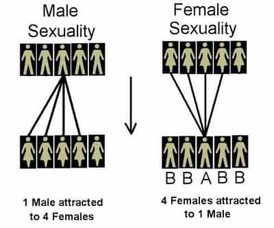

You’ve read Bang four times and honed your game over some years. What’s next? Well, for a start, take note of the changing environment around you. And changing it is. Though the material you read and practice from a book is very important, you also need to appreciate the developing trends out there.
Attracting a mate or one-time sexual partner is becoming harder and harder. Here’s why the next 20 years are going to be very tough for many, many men:
1. Women will use sugar daddy websites whilst having normal boyfriends
Not pictured: average male corporate cog used, cucked, and financially abused by a woman.
Cuckolding is bound to take on a new form over the next two decades. Many women will gladly take some (or a lot of) money on the side to have sex with a rich, usually older benefactor. At the same time, expect them to maintain a “relationship” with a man closer to their own financial level. The expanding breed of beta bux is going to be the lower middle-class chum who diligently provides for a woman, but never to the extent of her on-and-off sugar daddies.
If discovered (and, increasingly, there won’t be a need to vigorously hide these things), women are likely to resort to saying, “Well, he provided for me more than you did!” With more apocryphal and even confirmed cases of such sugar-daddying behavior, other women will duplicate the scenario.
2. More female sex trips abroad to Cuba, Cancún, Spain, and other places will happen
What lies beneath this photo?
On the surface, anticipate the ubiquitous and comparatively innocent photos of girls in bikinis jumping straight up into the air to make a star figure. Beneath it, however, will lurk the more sinister underbelly of girls traveling specifically to ride the cock carousel. Many men won’t ever have an idea of “their” woman’s sexual history or only have a chance of finally knowing about it when it’s far too late.
Away from the eyes of their boyfriends, husbands, or simply the men who pedestalize them as pristine angels, all sorts of uncouth antics and outright debauchery shall occur. If the shenanigans were to be at least partially filmed, the girls involved will have outed themselves as the furthest thing from marriage material. But as additional examples of this mindset come out, many men will nevertheless feel forced to wife them up, being bereft of other options.
3. The hollowing out of any protections for men, especially prenuptial and other agreements, will continue
…contracts meant to protect men are becoming worthless.
This process really started to accelerate after the case of Elizabeth Petrakis, who managed to convince a court that a supposedly verbal contract, impossible to verify, superseded her highly detailed prenup with her then husband. Men are scoring some victories in having their pre- or post-nups enforced, including hedge fund manager Jacob Gottlieb successfully arguing his wife should get a “mere” $1.6 million. Yet most men, and not just the multmillionaires, are either finding themselves screwed or will find themselves screwed.
“Pressured to sign” is the standard-issue cry for a woman to challenge clearly written words in a legal contract. There’s no such thing as “girl power” or “female agency” when a woman makes a money grab of this kind. Contractual concepts like unconscionable conduct, initially created to stop people from, say, getting business partners drunk to sign unfair agreements, are being warped to appeal to gold diggers keen to portray themselves as victims. Watch out.
4. An even bigger piece of the sexual pie is going to go to an even smaller number of men
There’s a term in biology called a superstimulus, an over-the-top representation of an already desired characteristic. In the case of men’s wants, think impossibly large but firm breasts and a one in a billion hip-to-waist ratio. For women, worldwide media and communications outlets mean that they are given constant examples of high-achieving, wealthy men, examples which are then used to evaluate every other man. These are the male superstimuli women have come to lust after.
With 80-90% of men on dating sites currently considered “subpar” by browsing women, another two decades of social media use and having LeBron James and Justin Bieber clones thrown at them is certain to make females even pickier. If 80% of women flock to 20% of men now, it may shift to 95% of women jumping at that same 20% of men. And the male top 5% could end up getting 80%+ of the decent females.
The whole situation should remind you of this:
Are you ready?

It’s literally a brave new world out there. Although the situation is harder than it should be, there’s no excuse for not striving and adapting.
This website and Roosh’s books, along with any other quality material you have come across, are resources you can use to be successful in the evolving sexual marketplace.
Read More: The Pitfalls Of Dating Intellectual Women